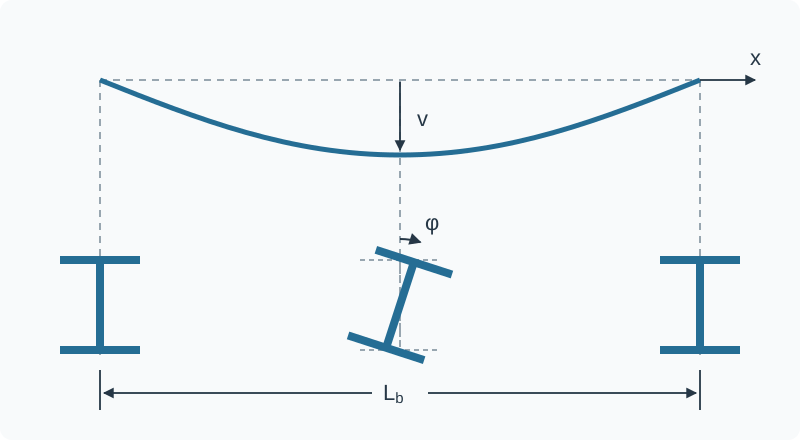
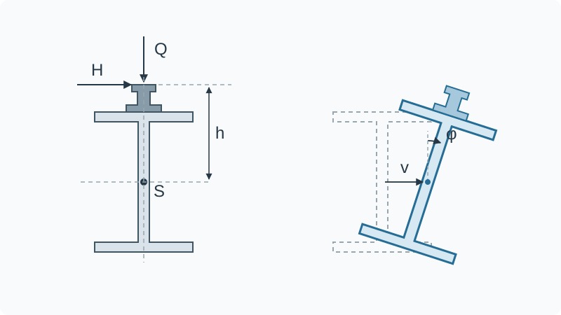

A crane runway girder can have sufficient strength in the calculation and still lose stability. When the compressed top flange moves laterally, the entire girder twists at the same time. In crane runway girders, the high point of wheel-load application, horizontal loads and eccentric load introduction aggravate this coupled failure mechanism.
Lateral displacement and twist act together
Vertical wheel loads bend the crane runway girder about its major axis. In the span, this puts the top flange into compression. If this compression flange loses its lateral stability, the girder moves out of its original plane of bending and simultaneously twists about its longitudinal axis. This coupled loss of stability of the entire member is called lateral-torsional buckling. It must be distinguished from local buckling of the web or a flange. Stability failure can occur before the cross-sectional resistance is reached or the yield strength is fully utilised in the governing cross-section.
As the load increases, a small initial curvature develops into a growing lateral displacement. The twist increases at the same time. Geometric imperfections, residual stresses from rolling or welding, and the actual boundary conditions determine how far the real resistance falls below the ideal elastic bifurcation point.

Why crane runway girders can be particularly sensitive
For a typical top-running overhead travelling crane, the vertical wheel load is introduced through the rail above the girder cross-section. If the load acts above the shear centre, the twisted configuration can allow the load to do additional destabilising work. The influence of load application height must therefore be included when determining the elastic critical moment.
Horizontal forces from acceleration, braking and skewing also act on the girder. A laterally offset rail, guide forces or connection details can generate additional torsion. The crane runway girder is then not only bent about its major axis. It is simultaneously subjected to
- major-axis bending,
- minor-axis bending,
- St Venant torsion and
- warping torsion.
This is precisely why checking only the major-axis bending moment is insufficient for many crane runway girders.
Enlarged top flanges or added angles and channels are not automatically beneficial either. Although they often increase the lateral stiffness of the compression flange, they make the cross-section monosymmetric and change the shear centre, torsional stiffness and warping stiffness. The stability benefit must be demonstrated for the actual complete cross-section.

The elastic critical moment is the starting point
The elastic critical moment describes the ideal elastic bifurcation point of the girder under consideration. With all other conditions unchanged, a larger means lower susceptibility to lateral-torsional buckling.
For a real crane runway girder, is not simply a tabulated value. It depends in particular on:
| Influence | Engineering significance |
|---|---|
| unrestrained length | longer lengths between effective restraints are usually less favourable |
| moment distribution | wheel position and load combination determine the location and extent of the moment peak |
| load application height | a load above the shear centre can have a destabilising effect |
| lateral flexural stiffness | limits lateral displacement |
| torsional stiffness | limits St Venant twist |
| warping stiffness | limits warping of open sections |
| supports and intermediate restraints | lateral, torsional and warping boundary conditions must be defined separately |
| cross-section symmetry | coupling and shear-centre position change for monosymmetric cross-sections |
In the classical Eurocode verification, leads through the non-dimensional slenderness to a reduction factor . In simplified form:
The lateral-torsional buckling resistance is therefore below the characteristic cross-sectional resistance once the stability reduction takes effect. The decisive issue is not the onset of an idealised eigenmode, but the design resistance allowing for imperfections and residual stresses.
Crane runway girders need a coupled verification
DIN EN 1993-6:2010-12, currently governing in Germany, addresses the stability verification of crane runway girders in Annex A. In that approach, major-axis bending, transverse bending and warping torsion are combined in an interaction. The method draws, among other things, on the elastic critical moment and the lateral-torsional buckling rules of the associated Eurocode 3 set.
For modelling, this means:
- Determine the governing wheel positions and horizontal loads in accordance with DIN EN 1991-3.
- Use the actual cross-section, including reinforcement and a realistic rail position.
- Model lateral and torsional supports and any warping restraint separately.
- must correspond to the moment distribution, load application height and boundary conditions.
- Assess actions about both axes and warping torsion together.
A linear eigenvalue analysis can identify the critical mode and an ideal elastic load factor. It is not, however, equivalent to a complete resistance verification. For complex cross-sections, discrete restraints or ambiguous boundary conditions, a geometrically and materially nonlinear analysis with imperfections may be required or appropriate. The imperfection shape and amplitude, material model and support stiffnesses must then be documented in a traceable manner.
A restraint is only as effective as its load path
A connection near the top flange is not automatically an effective stabilising restraint. A lateral restraint must limit displacement of the compression flange with sufficient stiffness. A torsional restraint must oppose cross-sectional twist. Depending on the system, warping at supports or intermediate points may also be affected.
Every assumed restraint therefore requires
- a clearly defined kinematic function,
- adequate stiffness and resistance,
- a designed connection and
- a continuous load path into a sufficiently stiff primary structure.
The crane rail must not be assumed indiscriminately to provide continuous lateral restraint. Its fastening, joints, the slip permitted by the clamps and the verified transfer of force are decisive. Likewise, restraining the bottom flange does not necessarily prevent lateral-torsional buckling of the compressed top flange; it may merely impose a different, constrained deformation mode.
Nor is a generic subdivision such as a universal design rule. The position and spacing of restraints must suit the moment distribution. A restraint near the maximum moment can be much more effective than the same restraint in a lightly loaded region.
Erection: check the lifting operation and lifting points
As long as the crane runway is not yet in operation, no wheel loads or horizontal loads from crane operation act on it. Once placed on its supports, the girder is loaded mainly by its self-weight, including the rail and attachments. Compared with the subsequent operating condition, this is generally not critical.
Lifting and moving the girder must, however, be considered separately. The position and number of lifting points, the inclination of the lifting gear and possible eccentricities determine the lifting forces. In addition to local stresses at the lifting points, bending-moment distributions different from those in the final condition may occur. The proposed lifting arrangement and the resistance of the lifting points must therefore be specified and verified.
Standards in 2026: keep the generations separate
The first step in the verification is to establish which edition of the standards applies to the specific project. In Germany, DIN EN 1993-6:2010-12 and its National Annex DIN EN 1993-6/NA:2022-06 continue to be listed as current national documents. This does not automatically make them binding under building law. The Technical Building Regulations introduced in the relevant German federal state and, for contractual application, the agreed edition are decisive.
At European level, EN 1993-6:2026 has been published as part of the second Eurocode generation. DIN still lists the German adoption as a standards project intended to replace DIN EN 1993-6:2010-12. A German National Annex aligned with the new edition is not yet available. The new EN 1993-6 reorganises the stability verification and incorporates the equivalent compression-flange model from EN 1993-1-1:2022 differently. The basic model itself is not new: a simplified equivalent compression-flange method was already included in the previous EN 1993-6. Its normative placement, certain calculation rules and its limits of application have changed, however.
In this article, EN 1993-6:2026 is therefore treated as an outlook. Rules from the two Eurocode generations must not be combined selectively in a project verification. A completely defined set of standards must be applied, including the relevant National Annexes and the project-specific regulatory or contractual basis.
Practical checklist
Seven questions should be answered before approving the design and erection:
- Where is the compression flange in each governing load case?
- What length is unrestrained between genuinely effective restraints?
- Are load application height, rail eccentricity and horizontal loads included?
- Does correspond to the actual moment distribution and boundary conditions?
- Are lateral, torsional and warping boundary conditions modelled separately and realistically?
- Are transverse bending and warping torsion verified together with major-axis bending?
- Have the lifting operation, lifting arrangement and lifting points been verified?
Conclusion
Lateral-torsional buckling is not a local strength problem but a spatial loss of stability of the entire girder. In crane runway girders, the high point of wheel-load application, horizontal loads, eccentricities and the frequent absence of continuous top-flange restraint increase the significance of this failure mechanism.
The decisive quantity is the elastic critical moment corresponding to the real system. Together with imperfections and residual stresses, it determines the reduced lateral-torsional buckling resistance. Safe structures require not only adequate cross-sectional resistance, but also effective restraints, a continuous load path and a coupled verification of the spatial actions.
Technical and standards sources
Governing German standards set
- DIN EN 1991-3:2010-12 – Actions induced by cranes and machinery, including the relevant National Annex.
- DIN EN 1993-6:2010-12 – Crane supporting structures.
- DIN EN 1993-6/NA:2022-06 – National Annex.
- DIN EN 1993-1-1 from the consistent Eurocode 3 set specified for the project, for the general stability rules.
- DIN EN 1991-1-6 from the specified set, for actions during execution.
Technical background and standards development
- Snijder et al.: Eurocode 3 Technical Report on Elastic Critical Buckling of Members, 2026. Explains the determination of , load application height, and lateral and torsional intermediate restraints.
- Knobloch/Bours: Evolution of Eurocode 3 – JRC Workshop, 2025. Shows changes to the lateral-torsional buckling rules in the second Eurocode generation and the influence of top-flange loading.
- Zwolski/Sadowski: Lateral-Torsional Buckling in Crane Runway Girders, KTH, 2025. Compares EN 1993-6:2007, FprEN 1993-6:2025 and numerical analysis; examines different restraint positions.
- Piotrowski/Bijak/Szczerba: Lateral-Torsional Buckling Resistance of Crane Runway Girders, 2019. Addresses monosymmetric and bisymmetric crane runway girders under biaxial bending and torsion.
- Knobloch et al.: Structural member stability verification in the new Part 1-1 of the second generation of Eurocode 3, 2020. Background on stability verifications, imperfections, and adequate lateral or torsional restraints.
Limits of the article
This article explains the mechanism and verification logic but does not replace project-specific design. Standards editions, National Annexes, regulatory adoption, crane data, rail fastening, boundary conditions and erection stages must be defined for the project.